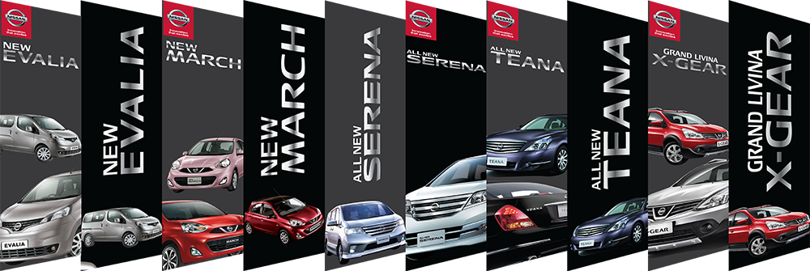

Central car

CENTRAL CAR
Todo para tu autos

Acerca de nosotros
Este es el sitio web oficial de la Agencia Nissan Tijuana Zona Río. Aquí puedes encontrar toda la información sobre los modelos de autos nuevos Nissan, seminuevos, nuestra área de servicio automotriz, horarios de atención, métodos de contacto y promociones vigentes. Ya sea si estás interesado en comprar un auto nuevo o usado, traer tu auto a servicio, adquirir refacciones originales Nissan o cualquier otro motivo en el que podamos atenderte, el personal calificado de Nissan Tijuana Zona Río está para servirte.
Nissan en el mundo
Nissan comenzó en diciembre de 1933, cuando las empresas Nihon Sangyo y Tobata Imono se establecieron en Japón con el nombre de Jidosha Seizo para fabricar automóviles y repuestos Datsun. Después de tres años, Nihon Sangyo se transformó en la única dueña de la compañía y cambió su nombre por Nissan Motor.
En 1985 Nissan se decidió en crear una campaña de posicionamiento en América ya que a la marca era conocida como Datsun y se decide en cambiar la imagen por la que actualmente se reconoce como Nissan.
Nissan en Tijuana.
Nissan en Tijuana llega en 1984 con un capital social de $30,000.00, con el cual inicia actividades en un pequeño local ubicado en el Boulevard Salinas No. 2434 en la Col. Aviación. En Agosto de 1986 decidieron cambiarse en Boulevard Sánchez Taboada. En Julio de 1999 se traslada a las actuales instalaciones, en Av. Xavier Villaurrutia No. 9950 en la Zona Río.>
Actividad principal de Nissan en Tijuana.
Es la compra-venta de automóviles y camiones nuevos marca Nissan, por lo cual cuenta con un convenio con la ensambladora de automóviles para su distribución en tres ciudades; Tijuana, Tecate y Ensenada.
Además de lo anterior se comercializan autos y camiones usados, refacciones automotrices y mano de obra por medio del taller servicio.
Actualmente se tiene un porcentaje de participación en el mercado de 25%. La empresa cuenta actualmente con 138 colaboradores.